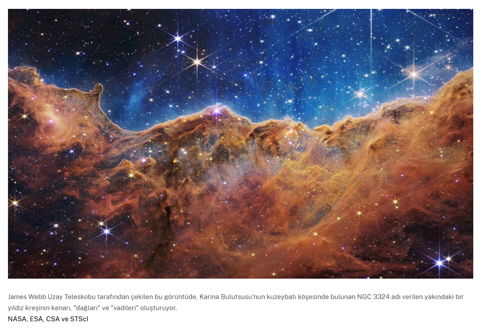

Yıldızların doğumu
Yıldızlar, moleküler bulutlar adı verilen büyük gaz ve toz bulutlarında oluşur. Moleküler bulutlar,
Güneş'in
kütlesinin 1.000 ila 10 milyon katı arasında değişir ve yüzlerce ışık yılı kadar genişleyebilir.
Moleküler
bulutlar soğuktur ve bu da gazın kümelenmesine ve yüksek yoğunluklu cepler oluşturmasına neden olur. Bu
kümelerden bazıları birbirleriyle çarpışabilir veya daha fazla madde toplayabilir ve kütleleri arttıkça
çekim kuvvetlerini güçlendirebilir. Sonunda, çekim bu kümelerden bazılarının çökmesine neden olur. Bu
olduğunda, sürtünme malzemenin ısınmasına neden olur ve bu da sonunda bir protostarın - bir bebek
yıldızın -
gelişmesine yol açar. Son zamanlarda moleküler bulutlardan oluşan yıldız grupları genellikle yıldız
kümeleri
olarak adlandırılır ve yıldız kümeleriyle dolu moleküler bulutlara yıldız kreşleri denir.

Yıldızların Yaşam süreci
İlk başta, protoyıldızın enerjisinin çoğu ilk çöküşüyle açığa çıkan ısıdan gelir. Milyonlarca yıl
sonra, yıldızın çekirdeğindeki muazzam basınçlar ve sıcaklıklar hidrojen atomlarının çekirdeklerini
sıkıştırarak helyum oluşturur, bu işleme nükleer füzyon denir. Nükleer füzyon enerji açığa çıkarır, bu
da yıldızı ısıtır ve yerçekimi kuvveti altında daha fazla çökmesini önler.
Gökbilimciler hidrojenin helyuma dönüşmesiyle nükleer füzyonu istikrarlı bir şekilde geçiren yıldızlara
ana dizi yıldızı adını verirler . Bu, bir yıldızın yaşamının en uzun evresidir. Yıldızın parlaklığı,
boyutu ve sıcaklığı bu evrede milyonlarca veya milyarlarca yıl boyunca yavaşça değişecektir. Güneşimiz
ana dizi evresinin yaklaşık olarak ortasındadır.
Bir yıldızın gazı yakıtını sağlar ve kütlesi, kaynağının ne kadar hızlı aktığını belirler; düşük kütleli
yıldızlar çok büyük yıldızlardan daha uzun, daha sönük ve daha soğuk yanar. Daha büyük yıldızlar, kendi
ağırlıkları altında çökmelerini engelleyen enerjiyi üretmek için yakıtı daha yüksek bir oranda
yakmalıdır. Bazı düşük kütleli yıldızlar trilyonlarca yıl boyunca parlayacak - evrenin şu anda var
olduğu zamandan daha uzun - bazı büyük yıldızlar ise sadece birkaç milyon yıl yaşayacaktır.
Yıldızların ölümü
Bir yıldızın yaşamının sonunun başlangıcında, çekirdeği helyuma dönüştürülecek hidrojenden mahrum kalır.
Füzyonla üretilen enerji, yıldızın içinde kütle çekiminin maddeyi bir araya çekme eğilimini dengeleyen
bir basınç yaratır, böylece çekirdek çökmeye başlar. Ancak çekirdeği sıkıştırmak aynı zamanda
sıcaklığını ve basıncını da artırarak yıldızın yavaşça şişmesine neden olur. Ancak, yıldızın ölümünün
son aşamalarının ayrıntıları büyük ölçüde kütlesine bağlıdır.
Düşük kütleli bir yıldızın atmosferi, çekirdekteki helyumu karbona dönüştüren füzyon sırasında bir alt
dev veya dev yıldız haline gelene kadar genişlemeye devam edecektir. (Bu, birkaç milyar yıl içinde
Güneşimizin kaderi olacaktır.) Bazı devler dengesizleşir ve titreşir, periyodik olarak şişirir ve
atmosferlerinin bir kısmını dışarı atar. Sonunda, yıldızın tüm dış katmanları patlayarak gezegenimsi
bulutsu adı verilen genişleyen bir toz ve gaz bulutu yaratır.

Yıldızdan geriye kalan tek şey, artık beyaz cüce adı verilen, yaklaşık Dünya büyüklüğünde bir yıldız külü
olan ve milyarlarca yıl boyunca yavaş yavaş soğuyan çekirdeğidir.
Yüksek kütleli bir yıldız daha da ileri gider. Füzyon karbonu oksijen, neon ve magnezyum gibi daha ağır
elementlere dönüştürür ve bu da çekirdeğin gelecekteki yakıtı olur. En büyük yıldızlar için bu zincir,
silisyum demire dönüşene kadar devam eder. Bu süreçler çekirdeğin çökmesini engelleyen enerji üretir
ancak her yeni yakıt ona giderek daha az zaman kazandırır. Tüm süreç sadece birkaç milyon yıl sürer.
Silisyum demire dönüştüğünde, yıldızın yakıtı birkaç gün içinde tükenir. Bir sonraki adım demiri daha
ağır bir elemente dönüştürmek olacaktır ancak bunu yapmak onu serbest bırakmak yerine enerji gerektirir.
Bir yıldızın yaşamının son evresinde, demirden oluşan çekirdeği kendi üzerine çökmeye başlar. Bu çöküş
sırasında çekirdekteki atomların arasındaki kuvvetler, çöküşü durduracak kadar güçlü bir direnç gösterir
ve bu direnç, çekirdeğin geri sıçramasına neden olur. Bu ani hareket, yıldızın merkezinden dışarıya
doğru yayılan şiddetli bir şok dalgası yaratır.
Bu şok dalgasının etkisiyle yıldız, süpernova adı verilen muazzam bir patlama gerçekleştirir. Patlama
sırasında yıldızın dış katmanları uzaya fırlatılırken, çekirdeğin kendisi inanılmaz bir yoğunluğa ulaşır
ve geride bir kalıntı bırakır. Bu kalıntı ya bir **nötron yıldızı** (son derece yoğun ve küçük bir
yıldız çekirdeği) ya da bir **kara delik** (ışığın bile kaçamayacağı kadar yoğun bir kütle) olabilir.
Süpernova patlaması yalnızca yıldızın sonunu getirmekle kalmaz; aynı zamanda evrene büyük miktarda
malzeme saçar. Bu malzeme, evrendeki moleküler bulutları zenginleştirir ve yeni yıldızların,
gezegenlerin ve hatta yaşamın temel yapı taşlarını oluşturur. Böylece süpernovalar, evrende sürekli bir
yenilenme ve dönüşüm sürecine katkı sağlar.